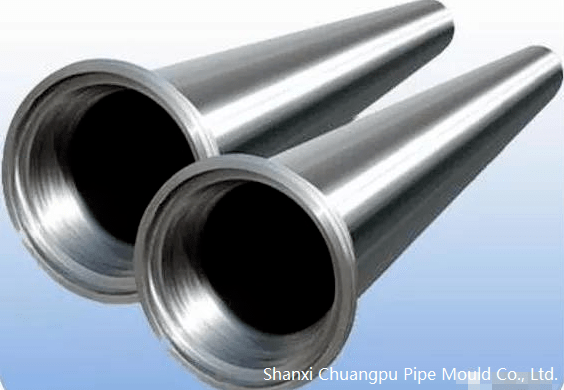

The failure of the pipe mould results from the increase of the residual stress in the pipe mould due to the uneven heating during the casting process. The main reason for the failure of the pipe mould is the hot crack, which accounts for 75%-80% of the total scrap of the pipe mould. When the hot crack exceeds a certain critical depth, the pipe mould must be replaced or repaired, otherwise it will be stuck and in the risk of not being able to pull it out.

The key failure area of the mould is the transition section between the socket and the body, which increases with the mould size and casting temperature increased, and is also the most concentrated area of the hot crack. Casting process and operating conditions play an important in the service life of casting pipe moulds.
1. Casting temperature
The smaller the temperature difference between casting and cooling process is, the better it is to restrain the hot crack and prolong the service life of the mould. The casting temperature should be as low as possible under the premise of guaranteeing the quality of the cast pipe mould so as to reduce the heat load of the pipe mould and increase the service life of the pipe mould.
2. Stable productivity
The stable and rhythmical production will make the pipe mould work in a stable temperature environment, while the cold and hot alternating stress of the pipe mould can be controlled in a small range and the thermal stress destruction of the pipe mould can be reduced to the lowest degree. The practice shows that the stable increase of productivity will effectively extend the service life of casting pipe mould.